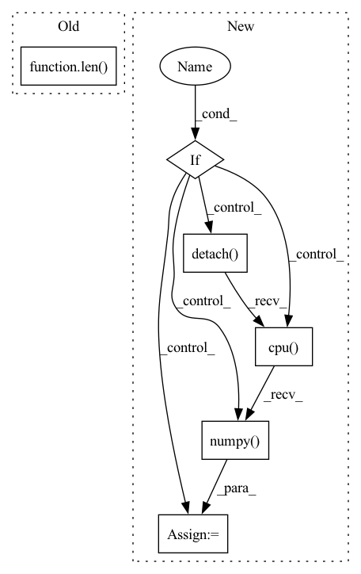

Pattern ID :23468
Before Change
image = np.ascontiguousarray(image, dtype=np.float32)
image = image
image /= 255
if len( image.shape) == 3:
image = image[None] // expand for batch dim
input_name = self.model.get_inputs()[0].nameAfter Change
original_image, processed_image = self.image_preprocessing(image, input_shape)
// Inference
if self.use_onnx :
// Input names of ONNX model on which it is exported
input_name = self.model.get_inputs()[0].name
// Run onnx model
pred = self.model.run([self.model.get_outputs()[0].name], {input_name: processed_image})[0]
// Run Pytorch model
else:
processed_image = torch.from_numpy(processed_image).to(self.device)
// Change image floating point precision if fp16 set to true
processed_image = processed_image.half() if self.fp16 else processed_image.float()
pred = self.model(processed_image, augment=False)[0]
pred = pred.detach().cpu().numpy()
if isinstance(pred, np.ndarray):
pred = torch.tensor(pred, device=self.device)
predictions = non_max_suppression(In pattern: SUPERPATTERN
Frequency: 3
Non-data size: 6
Instances Fragment ID: 73719580
Project Name: augmentedstartups/as-one
Commit Name: 79f3ea97d63f873008f3ad548f1428f07f4d9dae
Time: 2022-09-07
Author: ajmair.kashif@axcelerate.ai
File Name: asone-linux/code/asone/detectors/yolor/yolor_detector.py
M Class Name: YOLOrDetector
N Class Name: YOLOrDetector
M Method Name: detect(8)
N Method Name: detect(8)
M Parent Class:
N Parent Class:
M File Name: asone-linux/code/asone/detectors/yolor/yolor_detector.py
N File Name: asone-linux/code/asone/detectors/yolor/yolor_detector.py
M Start Line: 38
M End Line: 72
N Start Line: 70
N End Line: 109
Before Change
"Loss {loss.val:.5f} ({loss.avg:.5f})\t" \
"Degree_error {Degree_error.val:.3f} ({Degree_error.avg:.3f})\t" \
"Accuracy {acc.val:.3f} ({acc.avg:.3f})".format(
epoch, i, len( train_loader) , batch_time=batch_time,
speed=input.size(0) / batch_time.val,
data_time=data_time, loss_hkd=loss_2d_log, loss_hoe=loss_hoe_log, loss=losses,
Degree_error=degree_error, acc=acc)After Change
acc.update(mid/cnt, cnt)
has_hkd=False
acc_label = "mid15"
elif config.LOSS.USE_ONLY_HOE :
avg_degree_error, _, mid, _ , _, _, _, _, cnt= comp_deg_error(hoe_output.detach().cpu().numpy(),
degree.detach().cpu().numpy())
acc.update(mid/cnt, cnt)
has_hkd=False
acc_label = "mid15"
else:
avg_degree_error, _, _, _ , _, _, _, _, _= comp_deg_error(hoe_output.detach().cpu().numpy() ,
degree.detach().cpu().numpy())
_, avg_acc, cnt, pred = accuracy(plane_output.detach().cpu().numpy(),
target.detach().cpu().numpy()) Fragment ID: 73719581
Project Name: chenyanwu/mebow
Commit Name: b2d73baa29c1866475383226fcd4e716ada904e0
Time: 2021-07-13
Author: piercus@gmail.com
File Name: lib/core/function.py
M Class Name: AnonimousClass
N Class Name: AnonimousClass
M Method Name: train(10)
N Method Name: train(10)
M Parent Class:
N Parent Class:
M File Name: lib/core/function.py
N File Name: lib/core/function.py
M Start Line: 40
M End Line: 102
N Start Line: 56
N End Line: 124
Before Change
"Loss {loss.val:.4f} ({loss.avg:.4f})\t" \
"Degree_error {Degree_error.val:.3f} ({Degree_error.avg:.3f})\t" \
"Accuracy {acc.val:.3f} ({acc.avg:.3f})".format(
i, len( val_loader) , batch_time=batch_time,
loss_hkd=loss_hkd_log, loss_hoe=loss_hoe_log, loss=losses, Degree_error = degree_error, acc=acc)
logger.info(msg)
After Change
acc.update(mid/cnt, cnt)
acc_label = "mid15"
has_hkd = False
elif config.LOSS.USE_ONLY_HOE :
avg_degree_error, excellent, mid, poor_225, poor, poor_45, gt_ori, pred_ori, cnt = comp_deg_error(hoe_output.detach().cpu().numpy(),
degree.detach().cpu().numpy())
acc.update(mid/cnt, cnt)
acc_label = "mid15"
has_hkd = False
else:
avg_degree_error, excellent, mid, poor_225, poor, poor_45,gt_ori, pred_ori, _ = comp_deg_error(hoe_output.detach().cpu().numpy(),
degree.detach().cpu().numpy() )
_, avg_acc, cnt, pred = accuracy(plane_output.cpu().numpy(),
target.cpu().numpy())
Fragment ID: 73719582
Project Name: chenyanwu/mebow
Commit Name: b2d73baa29c1866475383226fcd4e716ada904e0
Time: 2021-07-13
Author: piercus@gmail.com
File Name: lib/core/function.py
M Class Name: AnonimousClass
N Class Name: AnonimousClass
M Method Name: validate(10)
N Method Name: validate(10)
M Parent Class:
N Parent Class:
M File Name: lib/core/function.py
N File Name: lib/core/function.py
M Start Line: 138
M End Line: 211
N Start Line: 144
N End Line: 235